Appendix B: Translations of the Term “Free Software”
The following is a list of recommended unambiguous translations of
the term “free software” into various languages:
- - Afrikaans: vrye sagteware
- - Albanian: software i lirë
- - Arabic: @lower 2.7pt @hbox{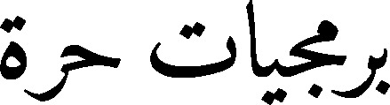}
- - Belarusian: @lower 3pt @hbox{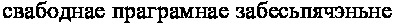}
- - Bulgarian: @lower 3pt @hbox{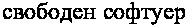}
- - Catalan: programari lliure
- - Chinese: @lower 0.9pt @hbox{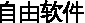} @kern -2pt (simplified), @lower 0.9pt @hbox{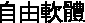} @kern -2pt (traditional)
- - Czech: svobodný software
- - Croatian/Serbian: slobodni softver
- - Danish: fri software or frit programmel
- - Dutch: vrije software
- - Esperanto: libera programaro
- - Estonian: vaba tarkvara
- - Farsi: @lower 4.6pt @hbox{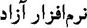}
- - Finnish: vapaa ohjelmisto
- - French: logiciel libre
- - German: freie Software
- - Greek: @lower 3pt @hbox{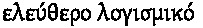}
- - Hungarian: szabad szoftver
- - Icelandic: frjáls hugbúna@dh{}ur
- - Ido: libera programaro
- - Indonesian: perangkat lunak bebas
- - Interlingua: libere programmage or libere programmario
- - Irish: bog earraí saoire
- - Italian: software libero
- - Japanese: @kern -0.5pt @lower 1.1pt @hbox{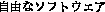} or @kern -0.5pt @lower 1.1pt @hbox{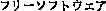}
- - Lithuanian: laisva programinė įranga
- - Malay: perisian bebas
- - Norwegian: fri programvare
- - Polish: wolne oprogramowanie
- - Portuguese: software livre
- - Romanian: software liber
- - Russian: @lower 3pt @hbox{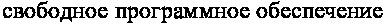}
- - Sardinian: software liberu
- - Serbian/Croatian: @lower 3pt @hbox{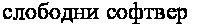}
- - Slovak: slobodný softvér
- - Slovenian: prosto programje
- - Spanish: software libre
- - Swahili: Programu huru za Kompyuta
- - Swedish: fri programvara, fri mjukvara
- - Tagalog: malayang software
- - Tamil: @lower 3.5pt @hbox{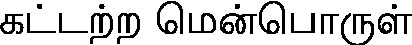}
- - Turkish: özgür yazilim
- - Ukrainian: @kern -1pt @lower 3.1pt @hbox{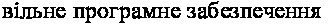}
- - Welsh: meddalwedd rydd
- - Zulu: Isoftware Ekhululekile
This document was generated by Christian Grothoff on February 18, 2016 using texi2html 1.82.